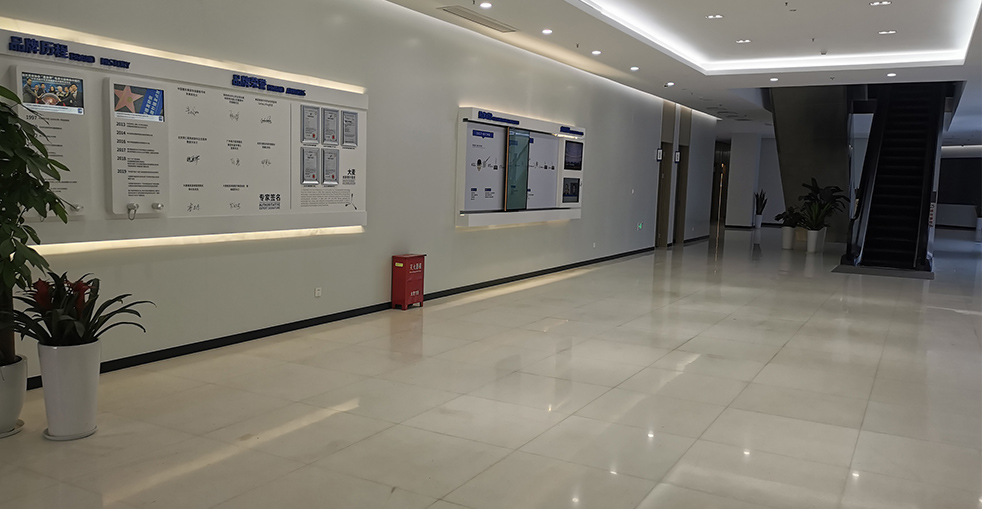

專業指導您維護與照顧新頭髮

您的植髮成果值得妥善照護。在大麥微針植髮醫院，我們提供全面的術後指導及專為植髮研發的護髮產品。術後的妥善護理確保最佳效果，同時保持您現有頭髮的健康。我們的專家在您的毛髮修復之旅的每個階段都為您提供指導。
為您頭髮健康之旅的每個階段提供完整照護
與商業產品有別，為真實效果設計
為最佳效果提供全面指導
前72小時：溫和清潔與護理
逐步恢復正常護髮程序
支援初期癒合與毛囊建立
維持與最佳化您的效果
該使用與避免哪些產品
隨時為您解答疑問
為何我們的專業頭髮護理計畫帶來卓越效果
我們的產品專為植髮研發，促進最佳癒合與生長，不影響毛囊存活或引起刺激。
針對術後立即期、癒合期與長期維護的不同護理方案。為您康復之旅的每個階段提供清晰指引。
非僅是一般建議——我們的建議由擁有18年以上患者照護經驗的毛髮修復醫師開發與監督。
業界領先，成果實證
自2006年起成為微針植髮技術的先驅與領導者
遍佈中國各大城市，維持相同的高標準
創新微針及植入筆技術帶來卓越效果
深受全球患者信賴，帶來改變人生的效果
為國際患者提供全程英語協助
現代化設施與嚴謹的安全流程讓您安心
見證患者們令人驚嘆的變身


與滿意患者的珍貴時刻

患者慶祝頭髮健康改善

自豪擁有更強韌健康的頭髮

對頭皮護理效果感到滿意

對護髮進度感到滿意

因更健康的頭髮感到自信

對頭髮質地改善感到欣喜

對頭皮護理效果感到滿意

對護髮計畫感到滿意
來自全球滿意患者的真實體驗
大麥的植髮後護理產品真的超專業！頭皮保養讓我的移植頭髮生長得更健康，護髮產品評價很高，現在我的頭髮又亮又柔順！
植髮洗髮精效果超好！在Google找到大麥的頭皮保養推薦，術後護理讓我的頭髮快速恢復，現在頭皮健康又舒適！
頭皮保養推薦給所有人！大麥的護髮產品讓我的頭髮變得柔順亮澤，植髮後護理指導非常詳細，效果超出預期！
在Bing查到植髮洗髮精推薦，大麥的產品真的很好用！植髮後護理很專業，頭皮保養效果明顯，頭髮健康成長！
護髮產品評價最高就是大麥！植髮後頭皮保養讓我的頭髮密度更好，專業護理產品讓我重拾自信，超推薦！
植髮後的頭皮保養太重要了！大麥的護理產品讓我的移植毛囊存活率超高，頭髮護理推薦給所有做過植髮的人！
體驗我們現代舒適的設施

最先進的設施

在高級休息室放鬆

無菌先進設備

私密專業空間

舒適術後空間

溫暖歡迎入口
關於植髮的常見疑問解答
聯絡我們獲取免費諮詢
15810155700
+86 13730143529
hairtransplant@qq.com